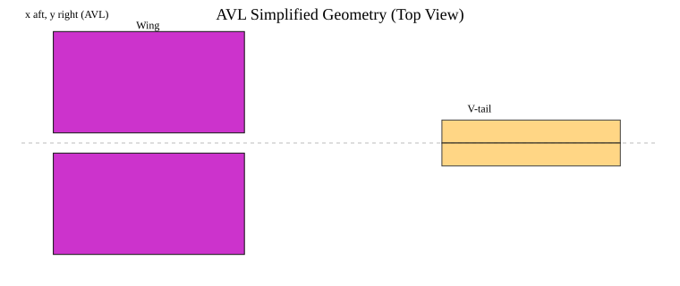
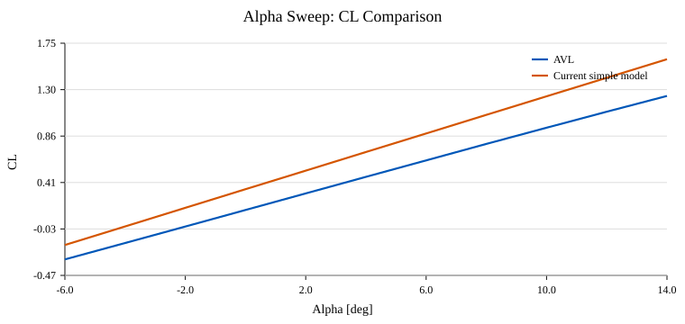
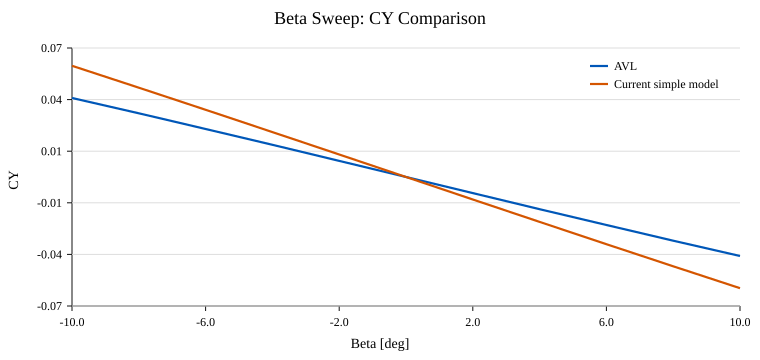
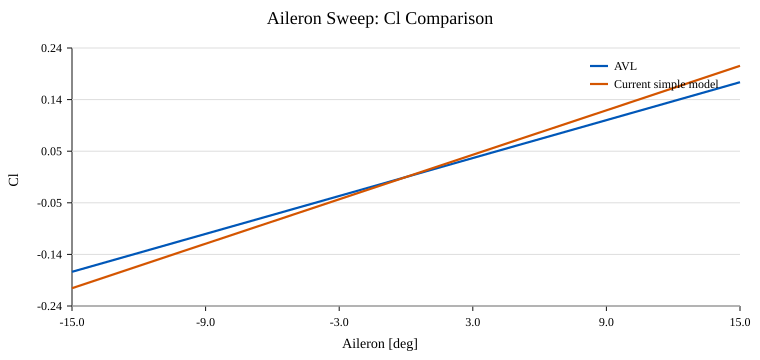
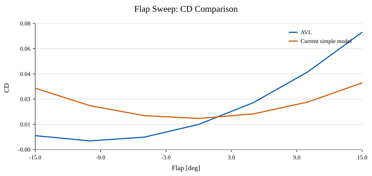
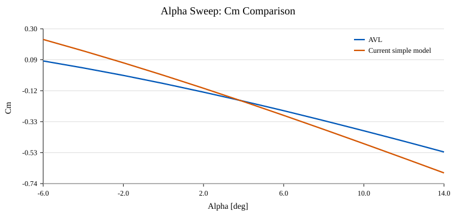
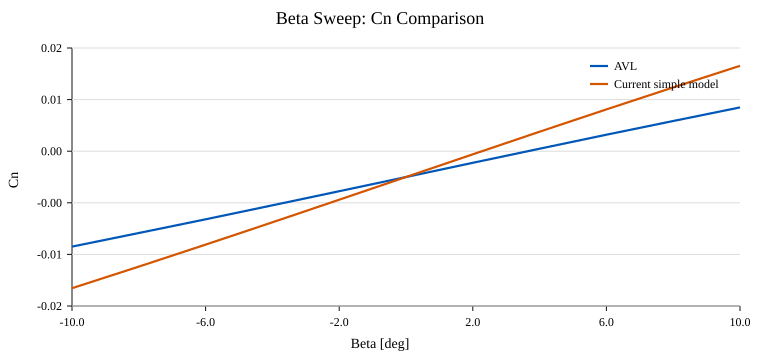
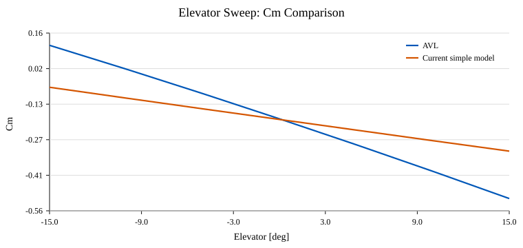
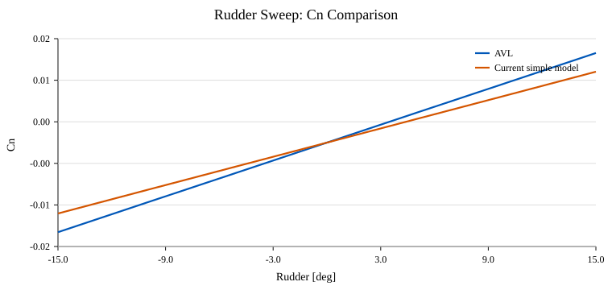

Zacharias Brown
AME 532
March 28, 2026
This study uses AVL as a higher-fidelity aircraft-level aerodynamic model for the Brown eVTOL project. The AVL model is intentionally simplified to the fixed aerodynamic lifting surfaces only: one main wing and one V-tail pair. Rotors, propwash, booms, and fuselage-body effects are omitted in this first pass. The purpose of the study is twofold. First, it satisfies the homework requirement to build an aircraft in AVL, run alpha, beta, and control-deflection sweeps, and trim the aircraft under multiple flight constraints. Second, it produces aircraft-level coefficient data that can be compared directly against the current linear-superposition `aeroSurface` model used in the flight sim.
AVL was launched successfully on the Mac from the local binary in the repo's AVL software folder.
The terminal transcript below demonstrates that the executable runs and loads the custom eVTOL aircraft model.
===================================================
Athena Vortex Lattice Program Version 3.40
Copyright (C) 2002 Mark Drela, Harold Youngren
This software comes with ABSOLUTELY NO WARRANTY,
subject to the GNU General Public License.
Caveat computor
===================================================
==========================================================
Quit Exit program
.OPER Compute operating-point run cases
.MODE Eigenvalue analysis of run cases
.TIME Time-domain calculations
LOAD f Read configuration input file
MASS f Read mass distribution file
CASE f Read run case file
The geometry was derived from the current aircraft_def.m setup using the coordinate mapping
x_avl = -x_sim, y_avl = y_sim, and z_avl = -z_sim. Standard nominal airfoils were used
for this homework pass: NACA 2412 for the wing and NACA 0012 for the V-tail. The figure below
shows the simplified planform that was implemented in AVL, and the listing excerpt confirms the actual surface
and control definitions used by the solver.

Brown eVTOL simplified fixed-aero model # Mach 0.0 # IYsym IZsym Zsym 0 0 0.0 # Sref Cref Bref 18.75 1.50 12.50 # Xref Yref Zref -0.0002 0.0 0.2089 # Simplified AVL geometry derived from aircraft_def.m # Mapping from sim to AVL: # x_avl = -x_sim # y_avl = y_sim # z_avl = -z_sim # Rotors, booms, and fuselage are intentionally omitted in this v1 model. SURFACE Wing # Nchord Cspace Nspan Sspace 12 1.0 20 1.0 YDUPLICATE 0.0 SECTION # Xle Yle Zle Chord Ainc Nspan Sspace -0.25 0.625 0.60 1.50 0.0 10 1.0 NACA 2412 CONTROL flap 1.0 0.72 0.0 0.0 0.0 1.0 CONTROL aileron -1.0 0.72 0.0 0.0 0.0 -1.0 SECTION # Xle Yle Zle Chord Ainc Nspan Sspace -0.25 6.875 0.60 1.50 0.0 0 1.0 NACA 2412 CONTROL flap 1.0 0.72 0.0 0.0 0.0 1.0 CONTROL aileron -1.0 0.72 0.0 0.0 0.0 -1.0 SURFACE VTail # Nchord Cspace Nspan Sspace 10 1.0 12 1.0
Positive control signs were checked with short ±5 deg cases before running the full sweeps. The conventions used were: flap down positive, aileron positive for roll-right, elevator positive for trailing-edge-down ruddervators, and rudder positive for yaw-right. The resulting signs were consistent with the intended setup, so no control-gain reversals were needed after the first verification pass.
| control | negative_effect | positive_effect | expected_positive_response | status |
|---|---|---|---|---|
| flap | -0.21827 | 0.21800 | positive flap should increase CL | PASS |
| aileron | -0.05841 | 0.05841 | positive aileron should create positive rolling moment | PASS |
| elevator | 0.10169 | -0.10449 | positive elevator should create a more nose-down pitching moment (negative Cm) | PASS |
| rudder | -0.00641 | 0.00641 | positive rudder should create positive yawing moment | PASS |
The aircraft was evaluated at a nominal cruise condition of V = 70 m/s. Alpha was swept from
-6 deg to 14 deg, beta from -10 deg to 10 deg, and the flap, aileron,
elevator, and rudder controls were each swept from -15 deg to 15 deg with the other variables held fixed.
The AVL results are plotted against the current simple flight-sim model to show where the present linear
superposition approach agrees and where it begins to differ.








The alpha sweep behaved as expected: lift increased nearly linearly over the selected range, while the pitching moment became more nose-down with increasing alpha. The beta sweep produced the expected lateral/directional responses in side force and yawing moment. Positive aileron generated a positive rolling moment, positive elevator produced a more nose-down pitching moment, and positive rudder produced a positive yawing moment. The flap sweep increased lift while also increasing induced drag. One important limitation is that this AVL model is inviscid, so the drag trends should be interpreted primarily as induced-drag trends rather than full viscous drag predictions.
AVL stability derivatives were extracted at the baseline operating point of alpha = 4 deg,
beta = 0 deg, and zero control deflections. These derivatives provide a convenient aircraft-level
reference for comparison against the current simple surface-based model.
| Derivative | Value |
|---|---|
| CDffd01 | 0.002136 |
| CLa | 4.535371 |
| CLb | 0.000000 |
| CLd01 | 0.043563 |
| CYb | -0.237284 |
| CYd04 | -0.004435 |
| Clb | -0.058831 |
| Cld02 | 0.011678 |
| Cma | -1.799272 |
| Cmd03 | -0.020238 |
| Cnb | 0.230735 |
| Cnd04 | 0.001289 |
Two trim styles were exercised. First, level-flight cases were trimmed at 55, 70, and
85 m/s using an explicit CL target with roll, pitch, and yaw moment constraints. Second,
banked horizontal-flight cases were trimmed at 70 m/s for bank angles of 15 deg and
30 deg using AVL's C1 banked-flight trim setup. This satisfies the homework requirement to
demonstrate more than one constraint style, while still keeping all cases tied to physically meaningful flight conditions.
| case_name | constraint_style | speed_mps | bank_deg | alpha_trim_deg | aileron | elevator | rudder | CLtot | CDtot | L_over_D | reasonableness |
|---|---|---|---|---|---|---|---|---|---|---|---|
| level_55 | explicit_CL | 55.0 | 0.0 | 11.6393 | -0.0 | -22.1037 | -0.0 | 0.85844 | 0.06005 | 14.295 | Converged, but the required control deflection is large for this simplified fixed-aero model. |
| level_70 | explicit_CL | 70.0 | 0.0 | 6.3091 | -0.0 | -12.9373 | -0.0 | 0.52996 | 0.02329 | 22.755 | Converged with moderate lift and control demand, which is reasonable for this simplified AVL model. |
| level_85 | explicit_CL | 85.0 | 0.0 | 3.6527 | -0.0 | -8.7673 | -0.0 | 0.35942 | 0.01136 | 31.639 | Converged with moderate lift and control demand, which is reasonable for this simplified AVL model. |
| bank15_70 | C1_banked | 70.0 | 15.0 | 6.5976 | -0.0678 | -13.4449 | 0.076 | 0.54865 | 0.02489 | 22.043 | Converged with moderate lift and control demand, which is reasonable for this simplified AVL model. |
| bank30_70 | C1_banked | 70.0 | 30.0 | 7.582 | -0.1463 | -15.1928 | 0.1355 | 0.61194 | 0.03073 | 19.913 | Converged with moderate lift and control demand, which is reasonable for this simplified AVL model. |
The comparison plots show that AVL and the current linear-superposition model track each other qualitatively in several trends, but they do not produce the same aircraft-level coefficients. That is exactly the useful result for the flight sim. The next practical sim step is not to replace the plant immediately, but to use these AVL results to update the current derivative set and validate whether that alone materially improves the model. If the residual mismatch remains large after that update, then the correct next step would be to build a new lookup-table-based aircraft-level aerodynamic block.
AVL software/brown_evtol/brown_evtol.avlAVL software/brown_evtol/brown_evtol.massAVL software/brown_evtol/output/ raw AVL sessions and outputsdocs/avl_homework/tables/ CSV tables for sweeps, trims, and derivative summariesdocs/avl_homework/assets/ SVG plots and geometry figures
Mark Drela and Harold Youngren, Athena Vortex Lattice (AVL), MIT.
Local supporting materials used during setup: AVL software/AVL Tutorial.pdf and the official AVL user primer.